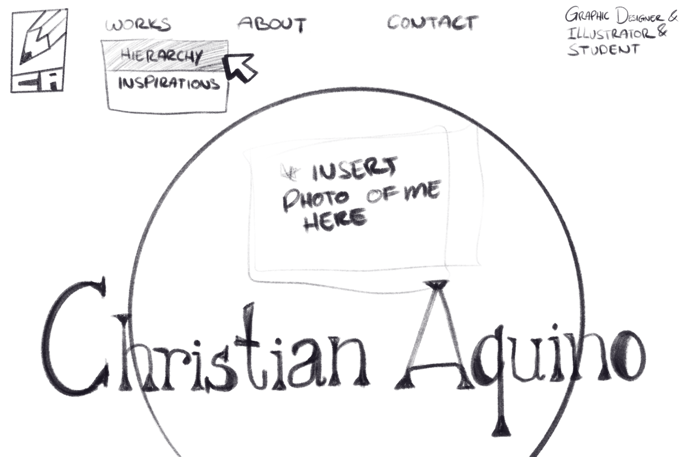
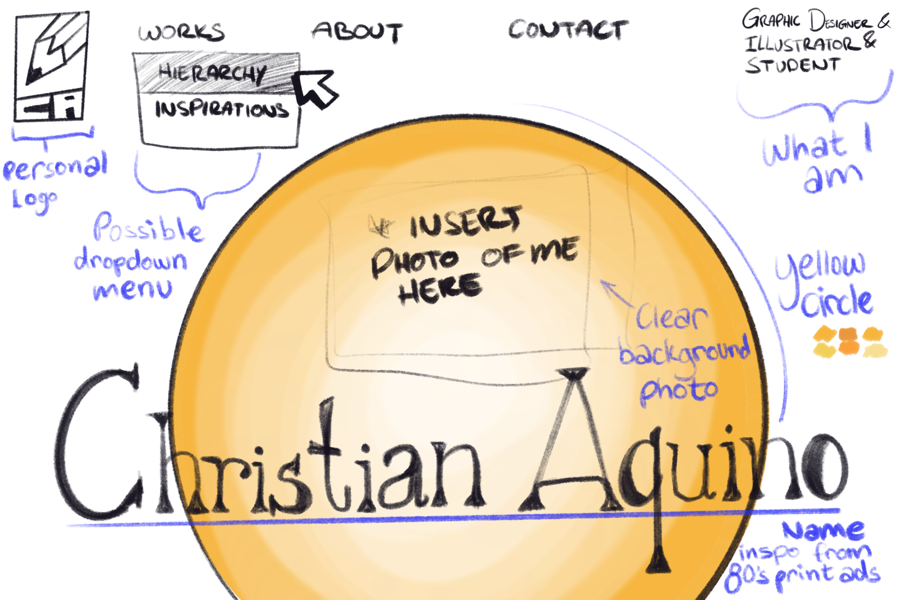

While researching on Pinterest I was honestly inspired by some of the 80's print ads. I liked the warm and innovative feel the website had along with its
negative space allowing the viewer to focus on the work. I am currently looking for some fonts to use but plan on using Advercase font. I thought a lot about our
hierarchy project when sketching and how it can be easy on the viewers eyes. When it came to linking the pages, I struggled a lot. I believe I just got fatigue from
looking at the screen for so long. But, I also had trouble with the code for directing Visual Studio Code to look and pull up the other html pages. I was typing exactly
what was shown in the zoom recording but it kept leading towards an error. I looked it up and saw people putting a / in front of the .html within the quotations, which worked
just fine for me. I also looked up how to make the navigation centered and have some space between them as I thought it would have better readability.